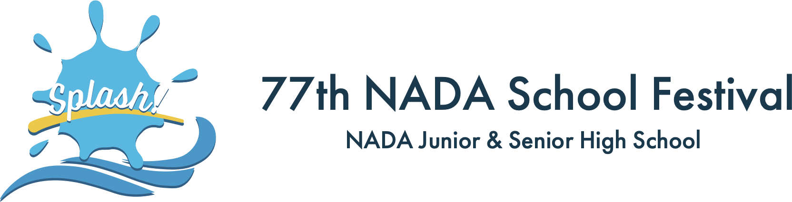
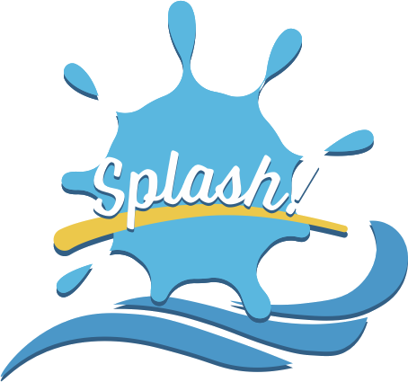
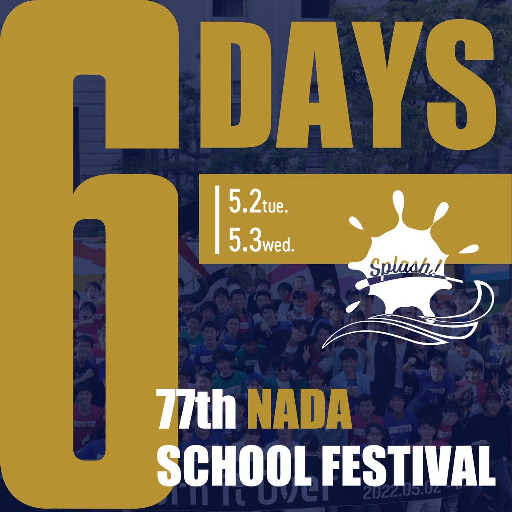
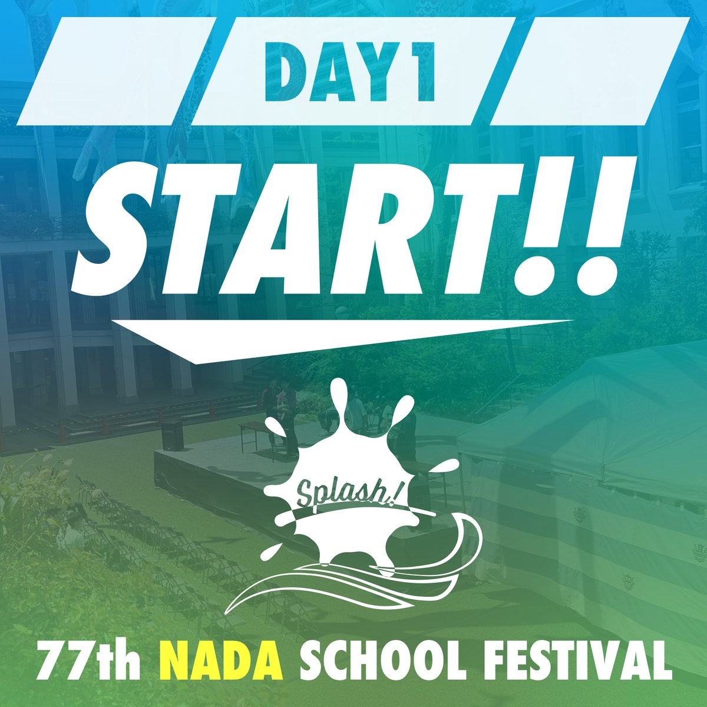

“Splash!” was the theme and visual identity of the 77th NADA School Festival, the first held without attendance limits since the pandemic. I led the design team, building everything from the logo outward. Over two days, the festival drew a record 30,000+ visitors.
Problem
The festival was reopening to everyone after the pandemic. Its identity had to win over both the students running it and visitors from outside.
Solution
One logo, “Splash!”, revised with both audiences for over two months, then carried through every touchpoint.
Outcome
A record 30,000+ visitors over two days, the most in the festival’s history.
Context:
A Festival Reopening to Everyone
Since the pandemic, the festival had been held with limits on who could attend. As student government president, I negotiated with the principal to open it to everyone again. That raised the stakes for its design: the festival needed an identity the students running it could believe in, and one that would draw in visitors from outside.
The Brief:
Designing for Two Audiences
The design team produced the merchandise, posters, pamphlet, website, and social media banners. All of them grew from one logo, so I focused there first, and I held it to two conditions:
The students own it
The students building the festival accept the meaning behind the logo, so the logo itself becomes their vision.
Visitors are drawn to it
People from outside the school find it visually appealing.
Design Response:
Two Meanings in One Word
The theme and the logo’s concept were set together, at the leadership meeting that chose the theme. There, I drew out what the committee members wanted this festival to be, and that became the concept.
A splash of water
Energy bursting out all at once.
A mix of colors
In Japanese, the theme also carries the sense of madara, mottled or mixed. The sweat and feelings of students and visitors mix together and burst out at once, painting a festival unlike any other.

Process:
Two Months of Asking Both Sides
I gathered opinions from students and from people outside the school again and again, revising after each round, until the logo met both conditions. It took more than two months to finish.
One Identity Across Every Touchpoint
The logo carried through to merchandise, posters, the pamphlet, the website, and a series of social media banners, including a countdown to the festival and a banner for each day.


Outcome:
A Record 30,000+ Visitors in Two Days
Result
Over its two days, the festival drew more than 30,000 visitors, the most in its history.
What I Learned
[What you learned leading the design team or balancing the two audiences]